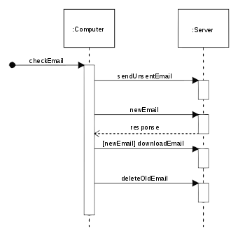
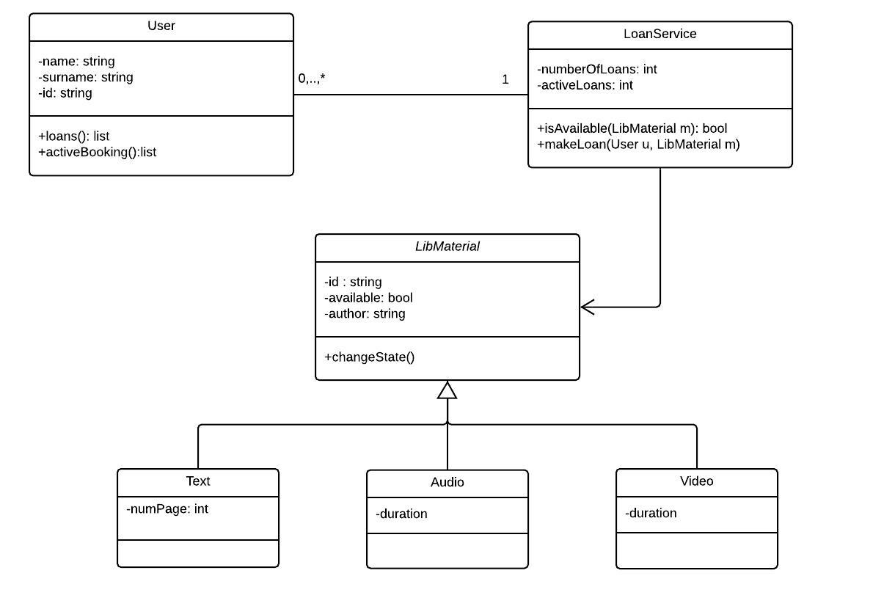

[Project design] 詳細設計(インターフェース設計と抽象化作業)
こんにちは。明月です。
この投稿は詳細設計(インターフェース設計と抽象化作業)に関する説明です。
以前の投稿で基本設計に関して説明しました。
link - [Project design] 基本設計(画面設計とDB設計)
基本設計というのは簡単に要約するとプログラムの全体的な構造を設定することです。それなら詳細設計はもっとプログラムをどのように作成するかを設定することです。
基本設計ではユーズケースやアクティブダイアグラムなどを通ってプログラムの要素よりユーザがプログラムをどのように使うか、プログラムの流れはどのようになるかの説明すると思ったら詳細設計はもっと具体的にプログラムの設計になり、プログラムらしい設計になります。
つまり、UML(Unified Modeling Language:統合モデリング言語)にはシークエンスダイアグラムやクラスダイアグラムを利用してプログラム設計することです。


この詳細設計する理由としては様々な工程のインターフェースを確定するためです。
今回はウェブプログラムではなく、C/S(Clieng-Server)プログラムの例で説明します。
我々が業務C/Sプログラムを作成すると思ったら、Serverには大幅でNetworkパート、業務パート、Core(共通部品)、その他のユーティリティに分けて開発します。一人で開発すると思えば別にパートを分ける理由がないですが、実務では一人で開発する場合が少ないので大幅で4パートで分けて開発すると思いましょう。
詳細設計がなく、すぐ開発を開始すると思えば、各パートでは工数(step count)が設定されます。
それなら、私が業務パートを作成しようと思うと、作成中でCoreの特定なデータを取得するコードを作成すると思いましょう。でも、Coreパートではまだその部分が作成せずに、重要度が低く、優先順位で離れています。そうなら我々はそのCoreが作成する時まで今の作業が止まります。
Networkを利用してClientにデータを送信しなければならない部分だとNetworkパートが作成する時まで待機するべきです。もっと大きく考えるとClientプログラムはServerプログラムが完成する時まで待機するべきです。
普通のプロジェクトは並列で開始するので、他のパートが完成する時まで待つことはできません。
そのため、詳細設計が必要です。
なのでウォーターフォール工程ではシークエンスダイアグラム、クラスダイアグラム、そしてもっと必要ならインターフェースダイアグラムまで必要です。でも、現実は設計図を一つ一つ全部作成する時間がありません。
そのため、私の考えはこの部分の工程を減らすとすごく時間を短縮することが可能ではないかと思いました。でも、省略することでは上の問題な協業作業ができない問題があります。
なので、基本設計と同じ概念でコーディングが設計だと思いで、InterfaceとAbstractクラスを利用してまだ開発してないですが、インターフェースと抽象化設計で詳細設計ができるではないかと思いました。
Interfaceは実際のコードを実装せずにこれから私が何を作成しようかと思う関数を作成します。
そして変数が必要な部分は抽象クラスで先に設定することも良いでしょう。
このように作業すると実際にコードを作成しなくてもプロジェクト内でデバッグエラーが発生しません。もちろん、インターフェースだけで実際のインスタンスが生成することはできないので、正常に動くことはしません。
でも、設計かつコーディングが同時に作成するので、時間をすごく短縮することができます。そしてUMLダイアグラムより直接にソースを見て判断することなので、個人的に設計可読性もよくなるでしょう。
そして、私も最近から導入して使う方法で一行のコメントです。(これは状況によりソースが逆に汚くなり、可読性が悪くなる可能性もあります。)
一行コメントすると、コードページが設計図になります。このように作成するとOOP特性を無視して関数単位開発することもなくなるし、コーディングのステップの減らす効果もあります。
デザインパターンでFacadeパターンを利用するとすごく綺麗なソースになった時もありました。
この方法では人により差異があるのでお勧めではないですが、少なくとも私の場合はこの方法で成功したプロジェクトがあります。
上の方法も基本設計でHTML作成しましょうと同じく、プログラムコードを作成することができなければできない方法です。
チームがすべて開発者になると個人的にすごく便利でした。
でも、日本ではウォーターフォール工程でプログラムを納品する時に詳細設計図を提出してくださいという依頼もあるので、依頼条件によりですね。自社SIならお勧めです。
ここまで詳細設計(インターフェース設計と抽象化作業)に関する説明でした。
ご不明なところや間違いところがあればコメントしてください。
- [Project design] プログラム最終テスト - ST(System test(Standard, Scenario))2021/10/26 19:10:07
- [Project design] プログラム結合テスト - IT(Integration test)2021/10/25 20:12:17
- [Project design] プログラム検証とテスト - Unitテスト2021/10/22 19:34:09
- [Project design] プログラム制作(コーディング) - クラス作成方法2021/10/20 19:28:09
- [Project design] プログラム制作(コーディング) - 関数作成方法2021/10/19 21:01:32
- [Project design] 詳細設計(インターフェース設計と抽象化作業)2021/10/18 18:23:15
- [Project design] 基本設計(画面設計とDB設計)2021/10/17 21:21:11
- [Project design] 要件定義(要求事項整理)2021/10/15 19:28:58
- [Project design] プロジェクトを工程(ウォーターフォール vs アジャイル)2021/10/14 18:36:04
- [Java] 62. Spring bootでWeb-Filterを設定する方法(Spring Security)2022/03/15 22:16:37
- [Java] JWT(Json Web Token)を発行、確認する方法2022/03/14 19:12:58
- [Java] 61. Spring bootでRedisデータベースを利用してセッションクラスタリング設定する方法2022/03/01 18:20:52
- [Java] 60. Spring bootでApacheの連結とロードバランシングを設定する方法2022/02/28 18:45:48
- [Java] 59. Spring bootのJPAでEntityManagerを使い方2022/02/25 18:27:48
- [Java] 58. EclipseでSpring bootのJPAを設定する方法2022/02/23 18:11:10
- [Java] 57. EclipseでSpring bootを設定する方法2022/02/22 19:04:49
- [Python] Redisデータベースに接続して使い方2022/02/21 18:23:49
- [Java] Redisデータベースを接続して使い方(Jedisライブラリ)2022/02/16 18:13:17
- [C#] Redisのデータベースを接続して使い方2022/02/15 18:46:09
- [CentOS] Redisデータベースをインストールする方法とコマンドを使い方2022/02/14 18:33:07
- [Design pattern] 3-6. ステートパターン(State pattern)2021/11/17 20:04:47
- [Design pattern] 3-5. メメントパターン(Memento pattern)2021/11/16 20:01:36
- [Design pattern] 3-4. イテレータパターン(Iterator pattern)2021/11/15 19:31:28
- [CentOS] Linux環境(CentOS)でCassandra(NoSQL DB)をインストールする方法(DBeaverブラウザでNoSQL使い方)2021/11/12 17:33:58